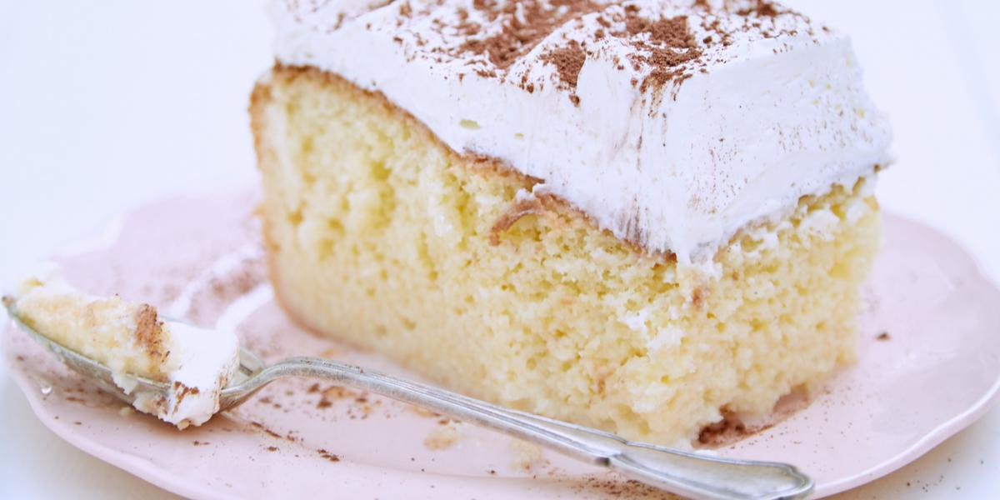

Tres leche unos de mis postres favoritos lo comeria por siglos

Ingredientes
4 huevos
200 gramos de azúcar
400 gramos de leche condensada
335 mililitros de leche evaporada
250 mililitros de leche entera
1 pellizco de sal
Para el merengue
4 claras de huevo
200 gramos de azúca
6 gotas de zumo de limón
2 cucharadas de canela molida
Preparacion
Precalienta el horno a 180 grados.
Casca los huevos y separa las claras de las yemas.
En un bol grande, bate las claras hasta que queden espumosas.
Añade el azúcar y sigue batiendo.
Añade las yemas, un pellizco de sal y sigue batiendo.
Añade la harina y mezcla hasta que los ingredientes se integren.
Engrasa ligeramente el molde que vayas a utilizar y hornea durante 22 minutos a 180 grados.
En otro bol, vierte la leche condensada, la leche evaporada y la leche entera. Mezcla bien hasta obtener
una mezcla homogénea.
Cuando el bizcocho esté listo, pincha con un palillo toda la superficie.
Vierte la mezcla de las tres leches sobre el bizcocho de manera uniforme.
Mientras preparas el merengue, reserva el bizcocho en la nevera.
En una olla pon agua a hervir, y cuando arranque a hervir baja el fuego.
En una fuente apta para horno, vierte las claras de huevo, el azúcar y las gotas de zumo de limón.
Coloca esa fuente dentro de la olla y bate suavemente la mezcla durante 8 minutos, luego retira del
fuego y sigue batiendo hasta conseguir que se formen los típicos picos del merengue.
Pon el merengue sobre el bizcocho y reserva la tarta en la nevera para servir bien fría.
Esto fue copiado desde https://www.lavanguardia.com/